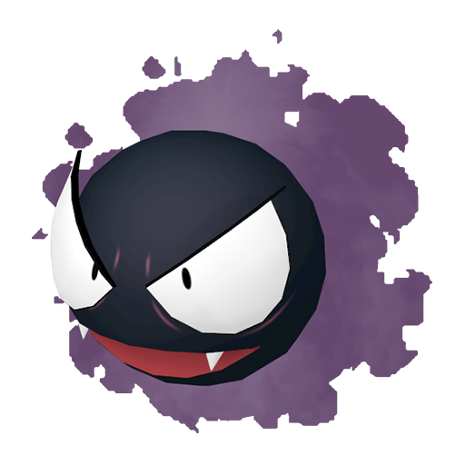
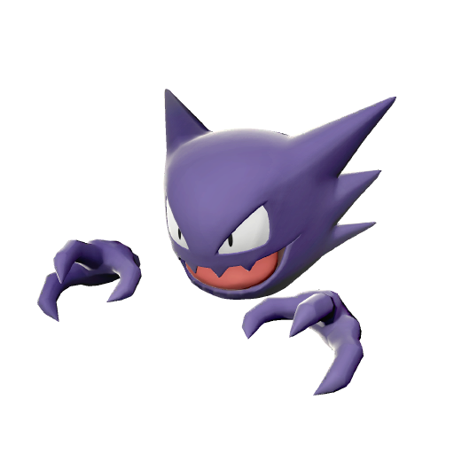
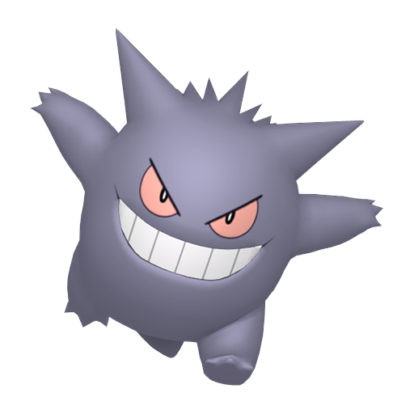

Fantominus
Fantominus n'a pas de vraie forme, ce qui est dû au gaz toxique qui compose 95 % de son corps. Cependant, il
apparaît constamment sous la forme d'un Pokémon noir et sphérique entouré d'une brume violette. Il a une
large bouche rose avec deux crocs visibles. Ses yeux semblent dépasser son corps rond, avec des paupières
visibles. Le gaz toxique qui entoure son corps peut causer des évanouissements et des suffocations, et il
est capable de terrasser un éléphant en quelques fractions de seconde. Comme il est principalement constitué
de gaz, son corps se rapetisse par temps de forts vents. Fantominus est l'un des Pokémon les plus légers
connus à ce jour.
Spectrum
Spectrum est l'évolution de Fantominus à partir du niveau 25, il ressemble à un fantôme violet avec un corps
fait de gaz. Il n'a pas de bras visibles et son corps se termine par une queue dentelée. Ses mains
désincarnées ont trois doigts pointus et ses yeux sont larges et triangulaires. Tout comme sa pré-évolution,
Spectrum est l'un des plus légers Pokémon connus à ce jour, ayant le plus grand rapport taille/masse soit
1,60 m pour seulement 0,1 kg.
Ectoplasma
Ectoplasma est un Pokémon très malicieux et parfois méchant. Il s'amuse à faire des blagues et à lancer des
malédictions, comme faire semblant d'être l'ombre de quelqu'un avant de se comporter de manière erratique.
Quand sa proie le remarque, Ectoplasma se nourrit de la terreur de la victime. Cependant, Ectoplasma est
démontré comme étant un Pokémon loyal au Dresseur qui s'en occupe correctement. Étant le résultat d'une
évolution par échange, Ectoplasma est rarement trouvable à l'état sauvage, même si certains individus ont
été aperçus dans les grottes et les endroits sombres, où les ombres se forment. Il apprécie tout
particulièrement les zones urbaines, comme les grandes villes et les impasses, mais seulement durant la
nuit.